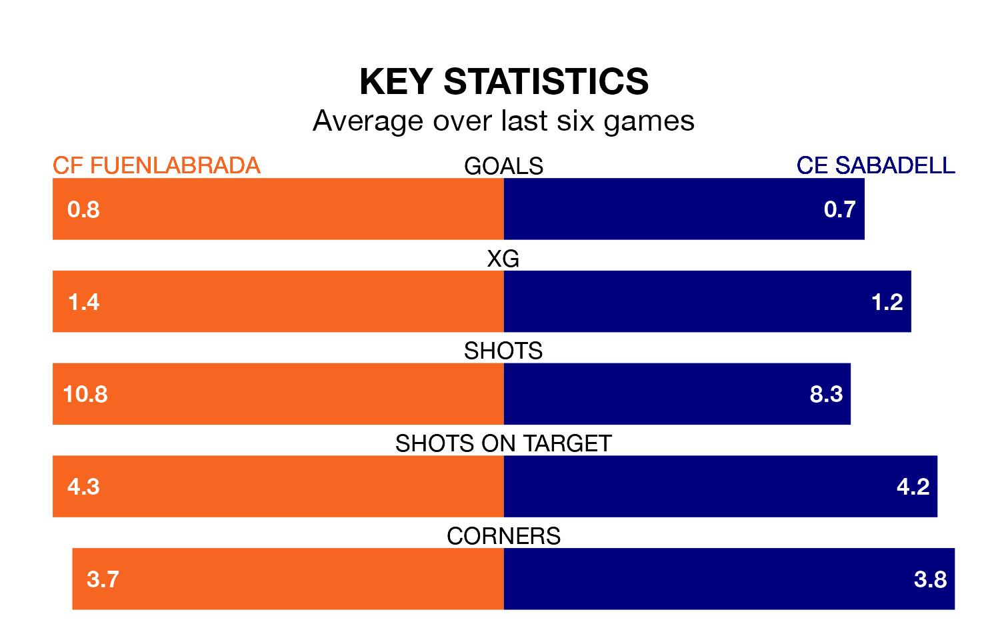

CF Fuenlabrada host CE Sabadell on Saturday at the Estadio Fernando Torres in Primera Division RFEF Group 1.
In their last league match, on March 16, Fuenlabrada drew with SD Tarazona 0-0 at home.
CE Sabadell also drew, 1-1 away at Deportivo La Coruña, with Pau Resta Tell scoring their goals.
With 27 goals in 28 games so far this season, Fuenlabrada are scoring at the league's average rate with 1.0 goals per game. But they are conceding at an average rate too, letting in 27 goals at a rate of 1.0 per game.
CE Sabadell are also average scorers, with 1.0 goal per game. They have conceded 1.5 goals per game.
The away side are 15th in the table after 28 games, of which they have won eight and drawn six, earning 30 points.
The hosts are six places ahead of CE Sabadell in ninth, with nine wins and 11 draws putting them on 38 points.
Fuenlabrada are in reasonable form in Primera Division RFEF Group 1, with three wins and two draws from their last six games.
With two wins and two draws over that period, CE Sabadell's form is worse – they have taken eight points from 18, compared to Fuenlabrada's 11.
In Fernando Ruiz Izaguirre, the home team have one of the league's most on-form strikers so far this season. He has notched six goals in 24 appearances, to sit ninth in the scoring charts.
The visitors' top scorers, with four goals each, are José Manuel Martínez Bel and Antonio Moyano Carrasquilla.
Updated: 10:19 (UTC), 22/03/24